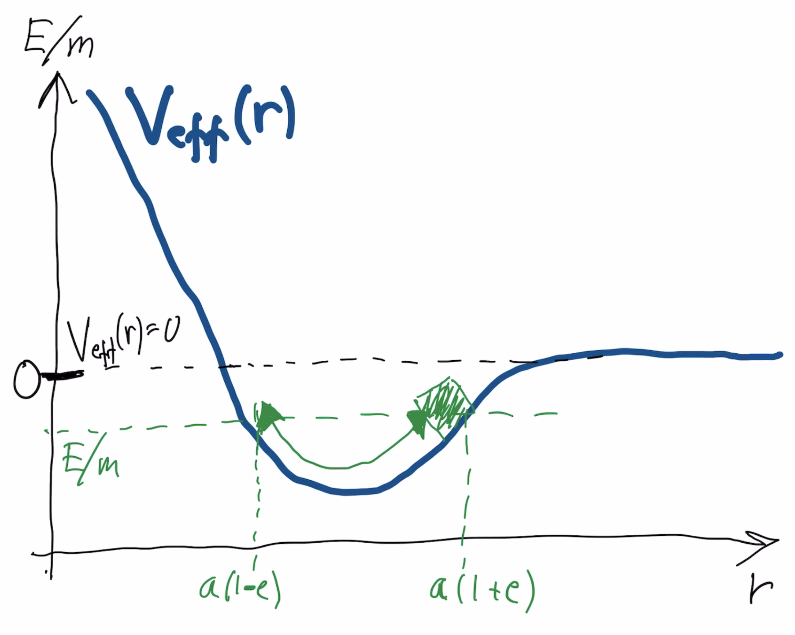

Forrige side🙂 🙁Effektivt potensialPADLET

En bundet planet med E < 0 svinger altså frem og tilbake nede i dalen. Hva svinger? Jo det vi ser på i likningen er jo r-posisjonen til planeten. Det er jo den som V(r) avhenger av (på samme måte som det var x-posisjonen for klossen). Planeten svinger frem og tilbake mellom to r-posisjoner, en som er nærmere r = 0 og en som er lenger vekk fra r = 0. Er ikke de to ytterpunktene aphel og perihel?.